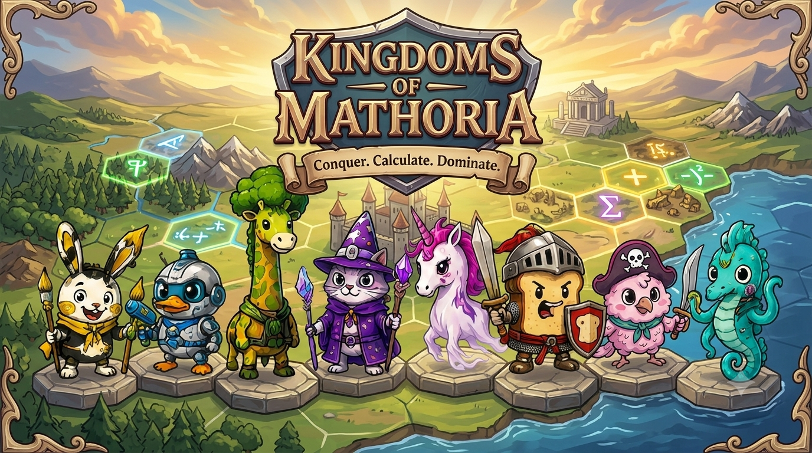

Die Figuren standen nicht auf ihrem Feld, weil die Zentrierung (translate(-50%,-50%)) von der Wipp-/Atem-Animation auf demselben Element überschrieben wurde — CSS-Animationen ersetzen die gesamte transform-Eigenschaft, statt sich mit dem statischen Wert zu kombinieren. Position und Animation sitzen jetzt auf zwei verschachtelten Elementen. Zusätzlich waren die PNGs höchst unterschiedlich stark „gepolstert" (transparenter Rand) — alle 32 Sprites wurden auf ihre sichtbare Bounding-Box zugeschnitten und werden jetzt unten-mittig verankert: die Füße stehen exakt auf dem Kachel-Mittelpunkt. Bildpfade zeigen auf sprites/.

Stil-Referenz für Variante 03 „Kingdoms of Mathoria": warmes Licht, gemalte Landschaft, goldener Zierrahmen, Wappenbanner-Titel „Conquer. Calculate. Dominate."
Alle 8 Fraktionen mit Original-Artwork aus sprites/ — zugeschnitten, dieselben 8 stehen unten auf dem Testfeld.
Burg + bis zu 3 wandernde Einheiten je Team — Füße auf der Kachel-Mitte, Territorium umrandet.